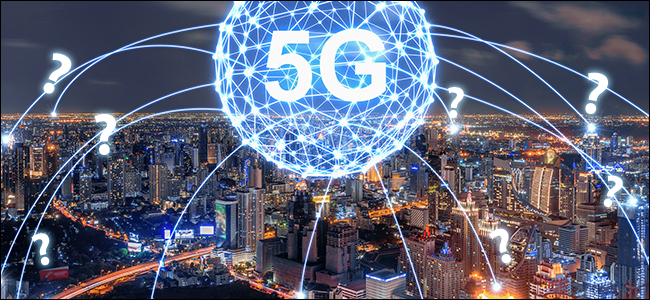

La tecnología es hoy en día la principal fuerza transformadora que está redefiniendo el funcionamiento de muchos sectores de actividad. Su influencia en el sector turístico ha sido tan grande que ha cambiado los procesos y los modelos de negocio. Los productos y servicios turísticos tienen que adaptarse a un consumidor internacional cada vez más informado y exigente, con gran capacidad de influencia y que vive a golpe de clic (demandando productos en el entorno digital).
El elemento que más ha transformado el turismo en los últimos años, ha sido el crecimiento exponencial en el número de dispositivos móviles que existen en el planeta. Ya no importa el status social de una persona. La tecnología se ha democratizado y hoy casi todo el mundo tiene un Smartphone, que le conecta de forma virtual y permanente, con el resto del planeta.
Se estima que en 2020 habrá 7.000 millones de personas y negocios que estarán conectados a Internet, a través de 30.000 millones de dispositivos. Esto nos indica que nuestra vida y nuestro trabajo, están intrínsecamente ligados a la tecnología.
La transformación digital que sufre nuestra sociedad hace que los destinos y las empresas turísticas tengan que prepararse para operar en un entrono completamente digital y adaptarse a cambios tecnológicos disruptivos.
Las nuevas tecnologías van a cambiar la sociedad, la cultura, la economía o el entretenimiento. Hay un cambio de paradigma y de ciclo, que exige un proceso constante de aprendizaje y de innovación. Tenemos que estar constantemente repensando nuestra empresa y cuestionando lo que hacemos, para poder innovar y mejorar, aportando más valor a nuestros clientes.
Es el proceso que se denomina el Internet de las cosas, que va a permitir que gran parte de los elementos y objetos de nuestra vida estén conectados a internet y entre sí. En algunos años, los edificios, los semáforos, los servicios públicos y los recursos turísticos, todos estarán conectados a internet e intercambiando información de forma constante.
Este fenómeno de un mundo totalmente interconectado, será facilitado por la llegada en unos años, de la tecnología 5G, que estará operativa en 2020.
La red 5G va a ser capaz de albergar hasta mil veces más dispositivos de los que hay en la actualidad (el sistema se estaba saturando) y las velocidades de conexión serán mucho más rápidas. Su magia es que permitirá multiplicar por 100 la velocidad y por 1.000 la capacidad de datos de las conexiones.
Con esta capacidad de gestionar datos que tendrá esta red, todos los elementos de la ciudad estarán perfectamente conectados, permitiendo la interacción, en tiempo real, entre el propio gobierno local, el mobiliario urbano, las señales de tráfico, las tiendas, los edificios, los coches, los dispositivos móviles y hasta los relojes o las gafas de ciudadanos y turistas.
Esta ingente cantidad de información y de datos, va a suponer una gran oportunidad para las empresas. Con la recopilación y cruce de cierta información relevante, se van a poder sacar conclusiones importantes sobre el comportamiento y los hábitos de consumo de nuestros clientes.